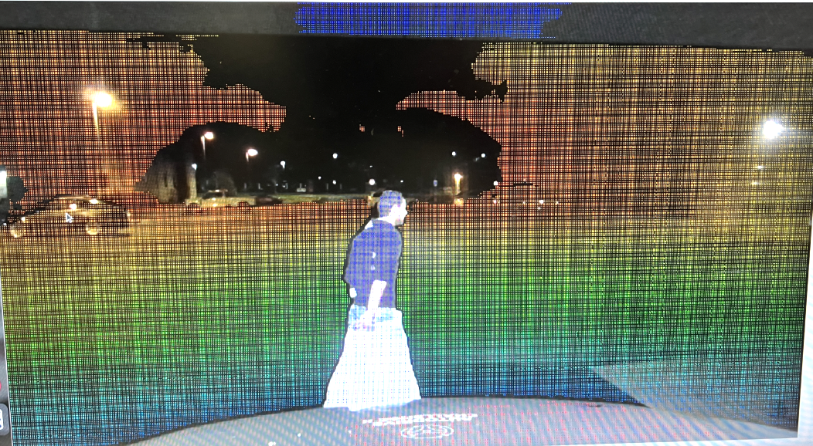
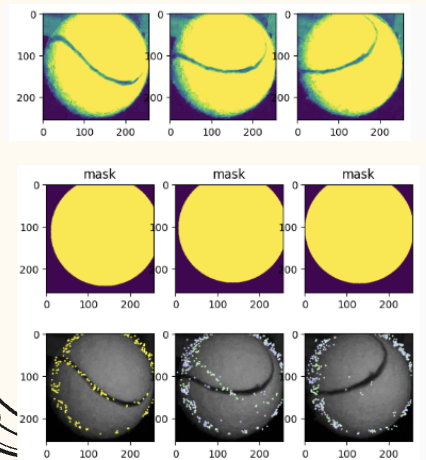

Arvin Cheng
Ciallo～
About Me
- Computer Science Undergraduate @ Pennsylvania State University
- Interested in: Computer Visions, Computer Graphics, and Computer Architecture
- Two years of Experiences in Machine Learning, Deep Learning, and Computer Visions
- Two years of Experience in System Programming
- Six years of Programming Experience, inclduing C++, C, and Python
- Proficient in C++, C, Java, Python, and MATLAB
- Currently Learning: Computer Hardware, Cuda, OpenGL, Rust
Experiences
Projects
These are all my main coding projects I have done
Vehicle Vision
Responsible for fused sensor data from LiDAR, Radar, and ZED2i Camera to construct the spatial perception of the vehicle. As a core Perception team member, I developed and maintained the ROS2 system to support vehicle's localization, object detection, and environmental awareness.
Tennis Balls Anaylsis
Leveraged a ResNet-18 and LSTM architecture to predict ball rotational speed with over 85% accuracy using 3–4 frame image sequences. Applied ray-based geometric analysis to localize the ball's rotation axis, incorporating this information as an auxiliary training signal to improve model performance.
Memory Allocator
Implemented an OS-driven slab allocator with segregated free lists to dynamically manage memory, enabling efficient allocation, deallocation, and reallocation of fixed-size objects.
CPU Prototype
Implemented registers, datapath, control unit, ALU, and other componenets to construct a 32-bit, 5-stage pipelined CPU processor. Recreated 5 main stages of MIPS processor to handle data hazards and data forwarding to ensure pipeline integrity.

Pinhole Camera Model
Utilized the Pinhole Camera Model to map 3D world points to 2D image coordinates using intrinsic and extrinsic camera parameters from two cameras, enabling accurate geometric reasoning for vision tasks.